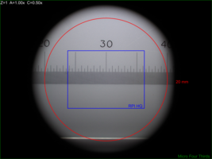

Leica S4E & S8APO
| Author: | Mitch Richling |
| Updated: | 2022-04-01 |
Copyright 2022 Mitch Richling. All rights reserved.
Table of Contents
Check out my home page for more stuff: https://www.mitchr.me/
1 Introduction
This page contains my personal notes for the Leica S8APO & S4E stereo microscopes. Being my personal notes, the content here isn't terribly polished; however, I've gone ahead and published it anyhow in hope someone might find it useful.
2 Microscope Symbols & Formulas
2.1 Variables
| Variable | Description | Units | Notes |
|---|---|---|---|
| \(S_{MAG}\) | Magnification At Sensor | Ratio | |
| \(S_{FOVh}\) | Sensor Horizontal Field Of View | mm | |
| \(S_{FOVv}\) | Sensor Vertical Field Of View | mm | |
| \(I_{SCLh}\) | Image Horizontal Scale | Pixel/mm | |
| \(I_{SCLv}\) | Image Vertical Scale | Pixel/mm | |
| \(S_w\) | Sensor Physical Width | mm | |
| \(S_h\) | Sensor Physical Height | mm | |
| \(S_d\) | Sensor Physical Diagonal | mm | |
| \(S_A\) | Sensor Physical Area | square mm | |
| \(I_w\) | Image/Sensor Pixel Width | pixel | |
| \(I_h\) | Image/Sensor Pixel Height | pixel | |
| \(I_{MP}\) | Total number of Image/Sensor Pixels | Megapixel | |
| \(L_s\) | Length At Sensor | mm | |
| \(L_o\) | Object Length | mm | |
| \(A\) | Auxiliary | Ratio | |
| \(Z\) | Zoom | Ratio | |
| \(O_c\) | Camera Objective | Ratio | camera relay lens, camera port lens |
| \(O_d\) | Camera Objective Image Circle Diameter | mm | |
| \(P_w\) | Sensor Pixel Width | mm | |
| \(P_h\) | Sensor Pixel Height | mm | |
| \(P_{AR}\) | Pixel Aspect Ratio | Ratio | |
| \(V_{FOV}\) | Visual Field Of View | mm | |
| \(E_{FN}\) | Eyepiece Field Number | mm | |
| \(E_{MAG}\) | Eyepiece magnification | Ratio | |
| \(V_{MAG}\) | Visual Magnification | Ratio | |
| \(R_c\) | Reticle Unit Conversion Factor | mm/Ru | \(1\,\mathrm{Ru}=1\,\mathrm{mmu}\) @ \(Z=1\) & \(A=1\) |
| \(R_s\) | Reticle Scale | mm/Ru | |
| \(L_R\) | Length in Reticle Units | Ru | |
| \(I_{AR}\) | Image Aspect Ratio | Ratio | |
| \(P_{IJSPAR}\) | ImageJ Scale Pixel Aspect Ratio | Ratio | |
| \(W\) | Working Distance | mm |
2.2 Formulas
- Image/Sensor magnification
- \[S_{MAG} = \frac{L_s}{L_o} = A \cdot Z \cdot O_c\]
- Image/Sensor Horizontal Field Of View
- \[S_{FOVh} = \frac{\min(O_d, S_w)}{S_{MAG}}\]
- Image/Sensor Vertical Field Of View
- \[S_{FOVv} = \frac{\min(O_d, S_h)}{S_{MAG}}\]
- Image/Sensor Horizontal Scale
- \[I_{SCLh} = \frac{S_{MAG} \cdot I_w}{S_w} = \frac{S_{MAG}}{P_w}\]
- Image/Sensor Vertical Scale
- \[I_{SCLv} = \frac{S_{MAG} \cdot I_h}{S_h} = \frac{S_{MAG}}{P_h}\]
- Visual magnification
- \[V_{MAG} = A \cdot Z \cdot E_{MAG}\]
- Visual Field Of View
- \[V_{FOV} = \frac{E_{FN}}{A \cdot Z}\]
- Reticle Scale
- \[\frac{R_c}{Z \cdot A}\]
- Reticle Length Measurements
- \[\mathrm{Length}=R_s \cdot L_R\]
- Sensor Diagonal length
- \[S_d = \sqrt{S_w^2 + S_h^2}\]
- Sensor Pixel Width
- \[P_w = \frac{S_w}{I_w}\]
- Sensor Pixel Height
- \[P_h = \frac{S_h}{I_h}\]
- Pixel Aspect Ratio
- \[P_{AR} = \frac{P_w}{P_h} = \frac{S_w \cdot I_h}{I_w \cdot S_h}\]
- Image Aspect Ratio
- \[I_{AR} = \frac{I_w}{I_h}\]
- ImageJ Scale Pixel Aspect Ratio
- \[P_{IJSPAR} = \frac{1}{P_{AR}}\]
3 S4E
3.1 Magnification and FOV at Various Zoom Levels With 10x/23 Eyepiece
| \(A=\) | \(W=\) | \(A=\) | \(W=\) | \(A=\) | \(W=\) | \(A=\) | \(W=\) | |
|---|---|---|---|---|---|---|---|---|
| \(0.5\times\) | \(200\,\mathrm{mm}\) | \(0.75\times\) | \(130\,\mathrm{mm}\) | \(1.0\times\) | \(110\,\mathrm{mm}\) | \(1.6\times\) | \(55\,\mathrm{mm}\) | |
| \(Z\) | \(E_{MAG}\) | \(V_{FOV}\) | \(E_{MAG}\) | \(V_{FOV}\) | \(E_{MAG}\) | \(V_{FOV}\) | \(E_{MAG}\) | \(V_{FOV}\) |
| 0.63 | 3.15 | 73.02 | 4.72 | 48.68 | 6.30 | 36.51 | 10.08 | 22.82 |
| 0.80 | 4.00 | 57.50 | 6.00 | 38.33 | 8.00 | 28.75 | 12.80 | 17.97 |
| 1.00 | 5.00 | 46.00 | 7.50 | 30.67 | 10.00 | 23.00 | 16.00 | 14.38 |
| 1.25 | 6.25 | 36.80 | 9.38 | 24.53 | 12.50 | 18.40 | 20.00 | 11.50 |
| 1.60 | 8.00 | 28.75 | 12.00 | 19.17 | 16.00 | 14.38 | 25.60 | 8.98 |
| 2.00 | 10.00 | 23.00 | 15.00 | 15.33 | 20.00 | 11.50 | 32.00 | 7.19 |
| 2.50 | 12.50 | 18.40 | 18.75 | 12.27 | 25.00 | 9.20 | 40.00 | 5.75 |
| 3.00 | 15.00 | 15.33 | 22.50 | 10.22 | 30.00 | 7.67 | 48.00 | 4.79 |
3.2 Reticle Scale, Magnification, and FOV at Zoom Stops With 10x/23 Eyepiece
| \(A\) | \(Z\) | \(E_{MAG}\) | \(E_{FN}\) | \(R_s\) | \(V_{MAG}\) | \(V_{FOV}\) |
|---|---|---|---|---|---|---|
| 0.5 | 0.63 | 10 | 23 | 3.17460 | 3.15 | 73.02 |
| 0.5 | 3.00 | 10 | 23 | 0.66667 | 15.00 | 15.33 |
| 1.0 | 0.63 | 10 | 23 | 1.58730 | 6.30 | 36.51 |
| 1.0 | 3.00 | 10 | 23 | 0.33333 | 30.00 | 7.67 |
| 1.6 | 0.63 | 10 | 23 | 0.99206 | 10.08 | 22.82 |
| 1.6 | 3.00 | 10 | 23 | 0.20833 | 48.00 | 4.79 |
4 S8APO
4.1 Magnification and FOV at Various Zoom Levels With 10x/23 Eyepiece
| \(A=\) | \(W=\) | \(A=\) | \(W=\) | \(A=\) | \(W=\) | \(A=\) | \(W=\) | |
|---|---|---|---|---|---|---|---|---|
| \(0.32\times\) | \(200\,\mathrm{mm}\) | \(0.63\times\) | \(101\,\mathrm{mm}\) | \(1.0\times\) | \(75\,\mathrm{mm}\) | \(2.0\times\) | \(25\,\mathrm{mm}\) | |
| \(Z\) | \(V_{MAG}\) | \(V_{FOV}\) | \(V_{MAG}\) | \(V_{FOV}\) | \(V_{MAG}\) | \(V_{FOV}\) | \(V_{MAG}\) | \(V_{FOV}\) |
| 1.0 | 3.2 | 71.88 | 6.30 | 36.51 | 10.0 | 23.00 | 20 | 11.50 |
| 1.25 | 4.0 | 57.50 | 7.88 | 29.21 | 12.5 | 18.40 | 25 | 9.20 |
| 1.6 | 5.1 | 44.92 | 10.08 | 22.82 | 16.0 | 14.38 | 32 | 7.19 |
| 2.0 | 6.4 | 35.94 | 12.60 | 18.25 | 20.0 | 11.50 | 40 | 5.75 |
| 2.5 | 8.0 | 28.75 | 15.75 | 14.60 | 25.0 | 9.20 | 50 | 4.60 |
| 3.2 | 10.2 | 22.46 | 20.16 | 11.41 | 32.0 | 7.19 | 64 | 3.59 |
| 4.0 | 12.8 | 17.97 | 25.20 | 9.13 | 40.0 | 5.75 | 80 | 2.88 |
| 5.0 | 16.0 | 14.38 | 31.50 | 7.30 | 50.0 | 4.60 | 100 | 2.30 |
| 6.3 | 20.2 | 11.41 | 39.69 | 5.79 | 63.0 | 3.65 | 126 | 1.83 |
| 8.0 | 25.6 | 8.98 | 50.40 | 4.56 | 80.0 | 2.88 | 160 | 1.44 |
4.2 Reticle Scale, Magnification, and FOV at Zoom Stops With 10x/23 Eyepiece
| \(A\) | \(Z\) | \(E_{MAG}\) | \(E_{FN}\) | \(R_s\) | \(V_{MAG}\) | \(V_{FOV}\) |
|---|---|---|---|---|---|---|
| 0.63 | 1 | 10 | 23 | 1.58730 | 6.30 | 36.51 |
| 0.63 | 8 | 10 | 23 | 0.19841 | 50.40 | 4.56 |
| 1.00 | 1 | 10 | 23 | 1.00000 | 10.00 | 23.00 |
| 1.00 | 8 | 10 | 23 | 0.12500 | 80.00 | 2.88 |
| 2.00 | 1 | 10 | 23 | 0.50000 | 20.00 | 11.50 |
| 2.00 | 8 | 10 | 23 | 0.06250 | 160.00 | 1.44 |
4.3 Numerical Aperture With No Auxiliary Lens
| Zoom | NA |
|---|---|
| 1.0 | 0.026 |
| 1.25 | 0.031 |
| 1.6 | 0.038 |
| 2.0 | 0.046 |
| 2.5 | 0.056 |
| 3.2 | 0.069 |
| 4.0 | 0.081 |
| 5.0 | 0.093 |
| 6.3 | 0.100 |
| 8.0 | 0.100 |
4.4 Leica C-Mount Video Objective Data
| Leica Part # | Leica Part Name | Mag | \(O_d\) | Notes | Ref |
|---|---|---|---|---|---|
| 10445928 | Leica Video Objective \(0.32\times\) | 0.32 | 6.7 | Estimated \(O_d\) | co32 |
| 10450528 | Leica Video Objective \(0.5\times\) | 0.50 | 10.5 | Measured \(O_d\) | co50 |
| 10447367 | Leica Video Objective \(0.63\times\) | 0.63 | 13.2 | Estimated \(O_d\) | co63 |
| 10446307 | Leica Video Objective \(0.8\times\) | 0.80 | 16.8 | Estimated \(O_d\) | co80 |
Note the image circles are all the same size at the sensor for a particular video objective, but FOV will change with the auxiliary & video objective.
With \(O_d=0.5\times\) we can capture the full image circle with a Micro Four Thirds (Olympus OM-D E-M1 Mark II) sensor, but only about 37% of the image circle with an IMX477 (RPI HQ) sensor. Note that about 65% of the Micro Four Thirds sensor is outside the image circle – i.e. wasted pixels.
| \(Z=1\) | \(Z=8\) | |
| \(A=0.63\) | ||
| \(A=1.00\) |  |
{kind=link}
{kind=link}
{kind=link}
{kind=link}
With \(O_d=0.32\times\) the image circle shrinks, and now we can capture about 76% of the image circle with an IMX477 (RPI HQ); however, about 3% percent of the sensor is outside the image circle – i.e. wasted sensor pixels. Note that with the smaller image circle the Micro Four Thirds sensor is even less efficiently used with about 84% of the sensor pixels wasted.
| \(Z=1\) | \(Z=8\) | |
| \(A=0.63\) | ||
| \(A=1.00\) |
{kind=link}
{kind=link}
{kind=link}
{kind=link}
4.5 Attaching Cameras
The Leica documentation suggests using a chain of adapters for attaching a generic digital camera. The first part of the chain is one of the following three parts: 10447436 1.6× DSLR tube, 10446175 2.5× DSLR tube, or 10445930 1.0× video/photo objective. Next will be one or more adapters for your camera. The result can be a tower of adapters taller than your microscope! For cameras with large sensors, this really is the only way to go. An excellent write-up for this approach may be found here. A good discussion on MicrobeHunter.com may found here.
For cameras with Micro Four Thirds and smaller sensors, a simpler approach is connect your camera via a c-mount adapter to one of Leica's "C-Mount Video Objectives": 10445928 \(0.32\times\), 10450528 \(0.5\times\), 10447367 \(0.63\times\), or 10446307 \(0.8\times\). These adapters are intended to be used with Leica's microscope cameras, but they will work with any c-mount camera – including your SLR with a c-mount adapter.
With the \(0.5\times\) objective one will obtain a nice 10.5mm image circle which is just about perfect for whole field imaging with the 13mm tall sensor in a Micro Four Thirds camera.
I use two cameras with my S8APO:
- Olympus OM-D E-M1 Mark II with a \(0.5\times\) or \(0.32\times\) video objective
- A DIY solution with a Raspberry Pi & Raspberry Pi HQ Camera attached to a \(0.32\times\) video objective.
4.6 Camera FOV & Image Scales
| RPI | OLY | |||||||||||||
|---|---|---|---|---|---|---|---|---|---|---|---|---|---|---|
| \(A\) | \(Z\) | \(O_c\) | \(O_d\) | \(S_{MAG}\) | \(P_{IJSPAR}\) | \(I_{SCLh}\) | \(I_{SCLv}\) | \(S_{FOVh}\) | \(S_{FOVv}\) | \(P_{IJSPAR}\) | \(I_{SCLh}\) | \(I_{SCLv}\) | \(S_{FOVh}\) | \(S_{FOVv}\) |
| 0.63 | 1 | 0.50 | 10.5 | 0.32 | 1.0000000 | 203.23 | 203.23 | 19.96 | 14.96 | 0.9961686 | 93.85 | 94.21 | 33.33 | 33.33 |
| 0.63 | 8 | 0.50 | 10.5 | 2.52 | 1.0000000 | 1625.81 | 1625.81 | 2.49 | 1.87 | 0.9961686 | 750.79 | 753.67 | 4.17 | 4.17 |
| 1.00 | 1 | 0.50 | 10.5 | 0.50 | 1.0000000 | 322.58 | 322.58 | 12.57 | 9.42 | 0.9961686 | 148.97 | 149.54 | 21.00 | 21.00 |
| 1.00 | 8 | 0.50 | 10.5 | 4.00 | 1.0000000 | 2580.65 | 2580.65 | 1.57 | 1.18 | 0.9961686 | 1191.72 | 1196.31 | 2.62 | 2.62 |
| 2.00 | 1 | 0.50 | 10.5 | 1.00 | 1.0000000 | 645.16 | 645.16 | 6.29 | 4.71 | 0.9961686 | 297.93 | 299.08 | 10.50 | 10.50 |
| 2.00 | 8 | 0.50 | 10.5 | 8.00 | 1.0000000 | 5161.29 | 5161.29 | 0.79 | 0.59 | 0.9961686 | 2383.45 | 2392.62 | 1.31 | 1.31 |
5 S4 and S8 Magnification Coverage
Various magnifications may be reached with different combinations of eyepiece, power, & auxiliary lens. "X" & "O" mark the reachable magnifications.
| S/EPxA | 003 | 004 | 005 | 006 | 008 | 010 | 013 | 016 | 020 | 026 | 032 | 040 | 050 | 064 | 080 | 100 | 128 | 160 | 200 | 256 | 320 | 400 | 500 | 640 |
|---|---|---|---|---|---|---|---|---|---|---|---|---|---|---|---|---|---|---|---|---|---|---|---|---|
| S4/10x0.5 | X | X | X | X | X | X | X | X | ||||||||||||||||
| S8/10x0.32 | X | X | X | X | X | X | X | X | X | X | ||||||||||||||
| S4/10x0.75 | X | X | X | X | X | X | X | |||||||||||||||||
| S4/16x0.5 | O | O | O | O | O | O | O | O | ||||||||||||||||
| S4/10x1 | X | X | X | X | X | X | X | X | ||||||||||||||||
| S8/10x0.63 | X | X | X | X | X | X | X | X | X | X | ||||||||||||||
| S4/25x0.5 | O | O | O | O | O | O | O | O | ||||||||||||||||
| S4/10x1.6 | X | X | X | X | X | X | X | X | ||||||||||||||||
| S8/10x1.0 | X | X | X | X | X | X | X | X | X | X | ||||||||||||||
| S4/20x1 | O | O | O | O | O | O | O | O | ||||||||||||||||
| S8/20x0.63 | O | O | O | O | O | O | O | O | O | O | ||||||||||||||
| S4/16x1.6 | O | O | O | O | O | O | O | O | ||||||||||||||||
| S8/16x1.0 | O | O | O | O | O | O | O | O | O | O | ||||||||||||||
| S4/20x1.6 | O | O | O | O | O | O | O | O | ||||||||||||||||
| S8/10x2.0 | O | O | O | O | O | O | O | O | O | O | ||||||||||||||
| S4/25x1.6 | O | O | O | O | O | O | O | O | ||||||||||||||||
| S8/25x1.0 | O | O | O | O | O | O | O | O | O | O | ||||||||||||||
| S8/16x2.0 | O | O | O | O | O | O | O | O | O | O | ||||||||||||||
| S4/40x1.6 | O | O | O | O | O | O | O | O | ||||||||||||||||
| S8/40x1.0 | O | O | O | O | O | O | O | O | O | O | ||||||||||||||
| S8/25x2.0 | O | O | O | O | O | O | O | O | O | O | ||||||||||||||
| S8/40x2.0 | O | O | O | O | O | O | O | O | O | O |
6 Reticle Unit Conversion Software For free42 and DM42
The computational part of this code is trivial. The value of the program really is in the settings menus – allowing the user to quickly change equipment settings and convert measurements.
The code as-is will work pretty well for people using an S8APO or S4E scope with a 10x EP and standard reticle; however, users with diffrent equipment will want to modify the settings menus.
6.1 The menu
| Key | Without [SHIFT] |
With [SHIFT] |
Notes |
|---|---|---|---|
A |
Store A | Display A | Stored in variable "mrcvA" |
Z |
Store Z | Display Z | Stored in variable "mrcvZ" |
Rc |
Store Rc | Display Rc | Stored in variable "mrcvRc" |
▒▒▒▒ |
|||
▒▒▒▒ |
|||
CONV |
Convert from Reticle Units | Convert from Reticle Units | |
8;.32 |
Leica S8APO; Z=1.00x; A=0.32x aux | Leica S8APO; Z=8.00x; A=0.32x aux | |
8;.63 |
Leica S8APO; Z=1.00x; A=0.63x aux | Leica S8APO; Z=8.00x; A=0.63x aux | |
8;1 |
Leica S8APO; Z=1.00x; A=1.00x (no aux) | Leica S8APO; Z=8.00x; A=1.00x (no aux) | |
8;1.6 |
Leica S8APO; Z=1.00x; A=1.60x aux | Leica S8APO; Z=8.00x; A=1.60x aux | |
8;2 |
Leica S8APO; Z=1.00x; A=2.00x aux | Leica S8APO; Z=8.00x; A=2.00x aux | |
ZZZ |
Leica S8APO; Z=1.00x; A=NO CHANGE | Leica S8APO; Z=8.00x; A=NO CHANGE | |
4;.32 |
Leica S4; Z=0.63x; A=0.32x aux | Leica S4; Z=3.00x; A=0.32x aux | |
4;.5 |
Leica S4; Z=0.63x; A=0.50x aux | Leica S4; Z=3.00x; A=0.50x aux | |
4;.63 |
Leica S4; Z=0.63x; A=0.63x aux | Leica S4; Z=3.00x; A=0.63x aux | |
4;.75 |
Leica S4; Z=0.63x; A=0.75x aux | Leica S4; Z=3.00x; A=0.75x aux | |
4;1 |
Leica S4; Z=0.63x; A=1.00x (no aux) | Leica S4; Z=3.00x; A=1.00x (no aux) | |
4;1.6 |
Leica S4; Z=0.63x; A=1.60x aux | Leica S4; Z=3.00x; A=1.60x aux |
6.2 The code
The code below may be cut-n-pasted the code below into free42. Alternately the raw file from github.
@@@@@@@@@@@@@@@@@@@@@@@@@@@@@@@@@@@@@@@@@@@@@@@@@@@@@@@@@@@@@@@@@@@@@@@@@@@@@@@@ (MRCONV) @@@@ DSC: Convert Reticle Units to Physical Units LBL "MRCONV" LBL 01 @@@@ Conversion & Variable Menu Page CLMENU "A" KEY 1 XEQ 11 "Z" KEY 2 XEQ 12 "Rc" KEY 3 XEQ 13 "CONV" KEY 6 XEQ 14 KEY 7 GTO 03 KEY 8 GTO 02 KEY 9 GTO 00 MENU STOP GTO 01 LBL 02 @@@@ Quick Settings Menu Page #1 CLMENU "8;.32" @@@@ Setting: S8 with 0.32x aux KEY 1 GTO 20 "8;.63" @@@@ Setting: S8 with 0.63x aux KEY 2 GTO 21 "8;1" @@@@ Setting: S8 with no aux KEY 3 GTO 22 "8;1.6" @@@@ Setting: S8 with 1.6x aux KEY 4 GTO 23 "8;2" @@@@ Setting: S8 with 2x aux KEY 5 GTO 24 "ZZZ" @@@@ Setting: Toggle Zoom KEY 6 XEQ 25 KEY 7 GTO 01 KEY 8 GTO 03 KEY 9 GTO 00 MENU STOP GTO 02 LBL 03 @@@@ Quick Settings Menu Page #2 CLMENU "4;.32" @@@@ Setting: S4 with 0.32x aux KEY 1 GTO 30 "4;.5" @@@@ Setting: S4 with 0.5x aux KEY 2 GTO 31 "4;.63" @@@@ Setting: S4 with 0.63x aux KEY 3 GTO 32 "4;.75" @@@@ Setting: S4 with 0.75x aux KEY 4 GTO 33 "4;1" @@@@ Setting: S4 with no aux KEY 5 GTO 34 "4;1.6" @@@@ Setting: S4 with 1.6x aux KEY 6 XEQ 35 KEY 7 GTO 02 KEY 8 GTO 01 KEY 9 GTO 00 MENU STOP GTO 03 LBL 00 @@@@ Application Exit EXITALL RTN LBL 11 @@@@ Code for menu key A FC? 64 STO "mrcvA" VIEW "mrcvA" RTN LBL 12 @@@@ Code for menu key Z FC? 64 STO "mrcvZ" VIEW "mrcvZ" RTN LBL 13 @@@@ Code for menu key Rc FC? 64 STO "mrcvRc" VIEW "mrcvRc" RTN LBL 14 @@@@ Code for menu key CONV RCL× "mrcvRc" RCL÷ "mrcvA" RCL÷ "mrcvZ" RTN LBL 20 @@@@ Code for Setting S8: with 0.32x aux 1 @@@@ Rc Value STO "mrcvRc" R↓ 0.32 @@@@ A Value STO "mrcvA" GTO 26 @@@@ Set Z Value LBL 21 @@@@ Code for Setting: S8 with 0.63x aux 1 @@@@ Rc Value STO "mrcvRc" R↓ 0.63 @@@@ A Value STO "mrcvA" GTO 26 @@@@ Set Z Value LBL 22 @@@@ Code for Setting: S8 with no aux 1 @@@@ Rc Value STO "mrcvRc" R↓ 1.00 @@@@ A Value STO "mrcvA" GTO 26 @@@@ Set Z Value LBL 23 @@@@ Code for Setting: S8 with 1.6x aux 1 @@@@ Rc Value STO "mrcvRc" R↓ 1.60 @@@@ A Value STO "mrcvA" GTO 26 @@@@ Set Z Value LBL 24 @@@@ Code for Setting: S8 with 2x aux 1 @@@@ Rc Value STO "mrcvRc" R↓ 2.00 @@@@ A Value STO "mrcvA" GTO 26 @@@@ Set Z Value LBL 25 @@@@ Code for Setting: EMPTY GTO 26 @@@@ Set Z Value LBL 26 @@@@ Drop X & set the zoom level for S8 Scope R↓ FC? 64 1.0 @@@@ Z Value NO SHIFT FS? 64 8.0 @@@@ Z Value SHIFT STO "mrcvZ" GTO 01 LBL 30 @@@@ Code for Setting: S4 with 0.32x aux 1 @@@@ Rc Value STO "mrcvRc" R↓ 0.32 @@@@ A Value STO "mrcvA" GTO 36 @@@@ Set Z Value LBL 31 @@@@ Code for Setting: S4 with 0.5x aux 1 @@@@ Rc Value STO "mrcvRc" R↓ 0.50 @@@@ A Value STO "mrcvA" GTO 36 @@@@ Set Z Value LBL 32 @@@@ Code for Setting: S4 with 0.63x aux 1 @@@@ Rc Value STO "mrcvRc" R↓ 0.63 @@@@ A Value STO "mrcvA" GTO 36 @@@@ Set Z Value LBL 33 @@@@ Code for Setting: S4 with 0.75x aux 1 @@@@ Rc Value STO "mrcvRc" R↓ 0.75 @@@@ A Value STO "mrcvA" GTO 36 @@@@ Set Z Value LBL 34 @@@@ Code for Setting: S4 with no aux 1 @@@@ Rc Value STO "mrcvRc" R↓ 1.00 @@@@ A Value STO "mrcvA" GTO 36 @@@@ Set Z Value LBL 35 @@@@ Code for Setting: S4 with 1.6x aux 1 @@@@ Rc Value STO "mrcvRc" R↓ 1.60 @@@@ A Value STO "mrcvA" GTO 36 @@@@ Set Z Value LBL 36 @@@@ Drop X & Set the zoom level for S4 Scope R↓ FC? 64 0.63 @@@@ Z Value NO SHIFT FS? 64 3.0 @@@@ Z Value SHIFT STO "mrcvZ" GTO 01 END
7 S-Series Leica Parts
| Leica Part # | Leica Part Name | |
|---|---|---|
| / | <> | |
| 1 | 10446298 | Leica S8 APO |
| 1 | 10446293 | Leica S4 E |
| 2 | 10447136 | 10x/23B eyepiece for eyeglasses, fixed |
| 4 | 10447137 | 10x/23B eyepiece for eyeglasses, adjustable |
| 10447138 | 16x/15B eyepiece for eyeglasses, fixed | |
| 10447139 | 16x/15B eyepiece for eyeglasses, adjustable | |
| 10446447 | Reticle 10 mm/0.1 mm | |
| 10446448 | Reticle 5 mm/0.1 mm | |
| 10446449 | Reticle 5 mm/0.05 mm | |
| 10447000 | Reticle 100 scale intervals / 0.002" | |
| 10447001 | Reticle 100 scale intervals / 0.001" | |
| 10447002 | Reticle 150 scale intervals / 0.0005" | |
| 1 | 10446334 | Achro Auxiliary \(0.32\times\) for S8APO, WD 200 mm |
| 1 | 10446335 | APO Auxiliary \(0.63\times\) for S8APO, WD 100 mm |
| 10446336 | APO Auxiliary \(1.6\times\) for S8APO, WD 37 mm | |
| 10446337 | APO Auxiliary \(2.0\times\) for S8APO, WD 25 mm | |
| 10446316 | Auxiliary \(0.32\times\) for S4/S6, WD 300 mm | |
| 1 | 10446318 | Auxiliary \(0.5\times\) for S4/S6, WD 200 mm |
| 10446319 | Auxiliary \(0.63\times\) for S4/S6, WD 155 mm | |
| 1 | 10446320 | Auxiliary \(0.75\times\) for S4/S6, WD 130 mm |
| 1 | 10446321 | Auxiliary \(1.6\times\) for S4/S6, WD 55 mm |
| 10446322 | Auxiliary \(2.0\times\) for S4/S6, WD 35 mm | |
| 10446325 | Auxiliary \(0.3–0.4\times\) for S4/S6 (Adjustable), WD 200–350mm | |
| 10446323 | Auxiliary \(0.6–0.75\times\) for S4/S6 (ErgoObjective) WD 77–137mm | |
| 10450817 | Auxiliary \(0.5\times\) for S9, WD 200 mm | |
| 10450818 | Auxiliary \(0.63\times\) for S9, WD 150 mm | |
| 10450819 | Auxiliary \(0.75\times\) for S9, WD 130 mm | |
| 10450820 | Auxiliary \(1.6\times\) for S9, WD 50 mm | |
| 10450821 | Auxiliary \(2.0\times\) for S9, WD 35 mm | |
| 10446324 | Lens shield | |
| 10450831 | Updated lens shield | |
| 1 | 10445928 | Leica Video Objective \(0.32\times\) |
| 1 | 10450528 | Leica Video Objective \(0.5\times\) |
| 10447367 | Leica Video Objective \(0.63\times\) | |
| 1 | 10446307 | Leica Video Objective \(0.8\times\) |
8 Image Sensor Data
| Type | Sensor | \(S_w\) | \(S_h\) | \(I_w\) | \(I_h\) | \(S_d\) | \(S_A\) | \(I_{MP}\) | \(P_w\) | \(P_h\) | \(P_{AR}\) | \(P_{IJSPAR}\) | Ref |
|---|---|---|---|---|---|---|---|---|---|---|---|---|---|
| 1/4" | IMX219 | 3.6800 | 2.760 | 3280 | 2464 | 4.60 | 10 | 8.1 | 1.122 | 1.120 | 1.00163 | 0.99838 | IMX219 |
| 1/3.2" | IMX179 | 3.2880 | 2.512 | 3280 | 2464 | 4.14 | 8 | 8.1 | 1.002 | 1.019 | 0.98328 | 1.01700 | IMX179 |
| 1/2.5" | MT9P031 | 5.7000 | 4.280 | 2592 | 1944 | 7.13 | 24 | 5.0 | 2.199 | 2.202 | 0.99883 | 1.00117 | MT9P031 |
| 1/2.3" | Leica mc170 | 6.1000 | 4.600 | 2592 | 1944 | 7.64 | 28 | 5.0 | 2.353 | 2.366 | 0.99457 | 1.00546 | mc170 |
| 1/2.3" | Leica mc190 | 6.1000 | 4.600 | 3648 | 2736 | 7.64 | 28 | 10.0 | 1.672 | 1.681 | 0.99457 | 1.00546 | mc190 |
| 1/2.3" | IMX477 RPI | 6.2868 | 4.712 | 4056 | 3040 | 7.86 | 29 | 12.3 | 1.550 | 1.550 | 1.00000 | 1.00000 | RPI |
| 1/1.8" | IMX334 | 7.9000 | 4.640 | 3952 | 2320 | 9.16 | 36 | 9.2 | 1.999 | 2.000 | 0.99949 | 1.00051 | IMX334 |
| 2/3" | IMX264 | 8.5000 | 7.100 | 2464 | 2056 | 11.08 | 60 | 5.1 | 3.450 | 3.453 | 0.99895 | 1.00105 | IMX264 |
| 16mm | film | 10.3000 | 7.400 | 4120 | 2960 | 12.68 | 76 | 12.2 | 2.500 | 2.500 | 1.00000 | 1.00000 | 16mm |
| 1" | IMX183 | 13.1300 | 8.760 | 5472 | 3648 | 15.78 | 115 | 20.0 | 2.399 | 2.401 | 0.99924 | 1.00076 | IMX183 |
| 1.1" | IMX304 | 14.2000 | 10.400 | 4104 | 3006 | 17.60 | 147 | 12.3 | 3.460 | 3.460 | 1.00008 | 0.99992 | IMX304 |
| 4/3" | OMD EM1 M2 | 17.4000 | 13.000 | 5184 | 3888 | 21.72 | 226 | 20.2 | 3.356 | 3.344 | 1.00385 | 0.99617 | OLY |
| APS-C | Nikon D3200 | 23.2000 | 15.400 | 6016 | 4000 | 27.85 | 357 | 24.1 | 3.856 | 3.850 | 1.00166 | 0.99834 | APSC |
| 35mm | film | 36.0000 | 24.000 | 14400 | 9600 | 43.27 | 864 | 138.2 | 2.500 | 2.500 | 1.00000 | 1.00000 | 35mm |
9 DIY RPI Camera

Figure 1: A live feed from the microscope with a glass scale on the stage.
Figure 2: A good view of the wire management for the camera.
Figure 3: A 30fps live feed illuminated only by my desk lamps. This is an exceptionally bright microscope.
9.1 The Idea
If you have arrived here via direct link, then you might be interested to know that your browser is pointed to the middle of a larger document – my personal stereo microscope notes. While these are my personal notes, I have attempted to expand this section a bit to make it easier to follow for someone wishing to replicate my camera setup.
Microscope cameras with built in image analysis software are pretty cool. Simply connect the camera to your monitor & mouse, and you can do simple image processing and measurement without a computer. These solutions are expensive for what you get, and the analysis software is pretty limited. So I thought, why not build my own? It's just a tiny computer and a camera in a compact case after all. If I used a Raspberry Pi, then I could actually run my favorite image analysis software (Fiji/ImageJ) right on the camera.
9.2 Bill Of Materials
| Item | Price (US $) |
|---|---|
| Raspberry Pi 4 Model B - 8 GB RAM | 75 |
| Raspberry Pi 4 Pro Mounting Plate for HQ Camera | 7 |
| Heatsink Raspberry Pi 4 Case with Dual Fans | 26 |
| Raspberry Pi High Quality HQ Camera - 12MP | 50 |
| MicroSD Card | 15 |
| Micro HDMI to HDMI Cable | 12 |
| CanaKit RPI 4 Power Supply with PiSwitch | 11 |
| Total | 196 |
9.3 System Setup
Note: These instructions are for the Bullseye based Raspberry Pi OS relased in November of 2021!
9.3.1 Minimal Configuration
The system setup steps I used for my camera will not work for others because I made use of several aspects of my personal home directory configuration others will not have. What follows are simplified configuration steps I believe will for for most people out of the box. The only tricky bit is Fiji because it is such a dynamic project, things change.
#### Refresh packages and update everything sudo apt-get update sudo apt-get upgrade sudo reboot #### Camera packages sudo apt install -y libcamera-apps sudo apt install -y libcamera-dev libepoxy-dev libjpeg-dev libtiff5-dev #### Install my favorite packages sudo apt install -y emacs gnuplot maxima sbcl telnet zsh tmux gitk xterm imagemagick nomacs gimp ruby exiv2 git openssl #### Install & Setup java sudo apt install -y openjdk-8-jdk #### Download Fiji software & launcher cd ~ test -e fiji-nojre.zip || wget 'https://downloads.imagej.net/fiji/latest/fiji-nojre.zip' test -e ImageJ.sh || wget 'https://github.com/imagej/imagej2/raw/master/bin/ImageJ.sh' #### Unpack Fiji unzip fiji-nojre.zip #### Put in place ImageJ.sh script (hardwire the install directory) sed 's/^DIRECTORY=.*/DIRECTORY=~\/Fiji.app/' ImageJ.sh > ~/Fiji.app/ImageJ.sh chmod a+rx ~/Fiji.app/ImageJ.sh #### Workaround for a bug in current Fiji mv ~/Fiji.app/jars/FilamentDetector-1.0.0.jar ~/Fiji.app/jars/FilamentDetector-1.0.0.bad #### Link ImageJ.sh into /usr/bin/ as ImageJ sudo ln -s ~/Fiji.app/ImageJ.sh /usr/bin/ImageJ #### Run Fiji and update *EVERYTHING* /usr/bin/ImageJ #### Clone the git repos cd ~ git clone 'https://github.com/richmit/microscope.git' git clone 'https://github.com/richmit/imagej.git' #### Link piSnap to /bin/ sudo ln -s ~/microscope/piSnap.sh /usr/bin/piSnap chmod a+rx /usr/bin/piSnap ### Link the RPI_tools into Fiji ln -s ~/imagej/PhilaJ-and-RPI_Tools/RPI_tools.ijm ~/Fiji.app/macros/toolsets/RPI_tools.ijm
9.3.2 My Configuration
Most Unix/Linux users have pretty strong opinions on how to setup a personal working environment. Emacs vs VI anyone? This section documents my personal configuration and is pretty specific to my operating environment. Some differences from the "Minimal Configuration" section above:
- Makes use of scripts and data found in my home directory
- Uses my environment setup scripts to put piSnap.sh in the right place and link it.
- ~/bin is where the binaries go
- I use my preferred login name for the main account, and remove the '
pi' user from the system - Quite a bit more apt installed software (Emacs, sbcl, maxima, gnuplot, paraview, etc…)
- I install the free42 calculator along with some software on the calculator itself.
- My primary system for photography and image analysis is a Windows system
- This system has a nice, color corrected 4K monitor, and a couple scanners attached
- Some of the software I use is proprietary and only runs on Windows
- With regard to free software, I run mostly the same stack on Windows (Fiji, GIMP, Imagemagick, Emacs, etc…) in MSYS2
9.3.2.1 System Setup
#### Refresh packages and update everything sudo apt-get update sudo apt-get upgrade #### DO: Turn off auto login for pi user #### DO: Turn on SSH & VNC sudo reboot #### Camera packages sudo apt install -y libcamera-apps sudo apt install -y libcamera-dev libepoxy-dev libjpeg-dev libtiff5-dev sudo apt install -y qtbase5-dev libqt5core5a libqt5gui5 libqt5widgets5 qtbase5-dev libqt5core5a libqt5gui5 libqt5widgets5 sudo apt install -y python3-pip libboost-dev libgnutls28-dev openssl meson libglib2.0-dev libgstreamer-plugins-base1.0-dev #### Install my favorite packages sudo apt install -y emacs gnuplot maxima sbcl telnet zsh tmux gitk xterm imagemagick nomacs gimp ruby exiv2 #### Install & Setup java sudo apt install -y openjdk-8-jdk #### Make local links for f in ruby perl sbcl; do if [ -e /usr/bin/$f ]; then sudo ln -s /usr/bin/$f /usr/local/bin/$f else echo Missing: /usr/bin/$f fi done #### Create my account sudo addgroup richmit sudo adduser --gid 1001 richmit ## use GID from previous command #### Add me to all the groups the pi user is in -- or at least users that start with pi ;) sudo usermod -aG `grep '[:,]pi' /etc/group | cut -d: -f3 | tr '[:space:]' , | sed 's/,$//'` richmit #### Change my shell sudo usermod -s /usr/bin/zsh richmit #### Change root's password sudo passwd root #### DO: Add my account to sudo #### Login with my new account sudo su - richmit #### Setup directories & links in $HOME cd ~ mkdir -p ~/bin mkdir -p ~/tmp/tmux/sockets mkdir -p ~/Pictures/pi-cam mkdir -p ~/synced/world/pi-data/ mkdir -p ~/synced/world/dotfiles/ mkdir -p ~/synced/world/dotfilesSecure/ mkdir -p ~/synced/world/stuff/homeNetwork/ mkdir -p ~/synced/world/stuff/my_ref/ mkdir -p ~/synced/world/stuff/notes/ mkdir -p ~/synced/world/my_prog/learn/ex-ruby/ mkdir -p ~/synced/world/my_prog/lispStuff/lispy/ mkdir -p ~/synced/world/my_prog/MJRdebianPakageTools/ mkdir -p ~/synced/world/my_prog/tmuxStuff/ mkdir -p ~/synced/world/my_prog/UNIXutils/ mkdir -p ~/synced/world/my_prog/utils/ mkdir -p ~/synced/world/my_prog/microscope mkdir -p ~/synced/world/my_prog/ImageJ mkdir -p ~/synced/world/my_prog/mpms mkdir -p ~/synced/world/my_prog/dir-inventory/ mkdir -p ~/synced/core/ mkdir -p ~/synced/Doc2/gadgets/leica_microscopes/ ln -s ~/synced/world ~/world ln -s ~/synced/core ~/core #### DO: Sync data from laptop via rsync #### Setup dotfiles & ~/bin ./world/my_prog/UNIXutils/SelectSetup.rb --loc=HOME; ./world/my_prog/UNIXutils/SetupBin.rb #### DO: Reboot #### DO: Login as myself #### Delete pi user sudo userdel -r pi #### DO: Enable automatic login #### DO: Change hostname to pi-cam #### DO: Reboot #### Download Fiji software & launcher cd ~ test -e fiji-nojre.zip || wget 'https://downloads.imagej.net/fiji/latest/fiji-nojre.zip' test -e ImageJ.sh || wget 'https://github.com/imagej/imagej2/raw/master/bin/ImageJ.sh' #### Unpack Fiji unzip fiji-nojre.zip #### Put in place ImageJ.sh script (hardwire the install directory) sed 's/^DIRECTORY=.*/DIRECTORY=~\/Fiji.app/' ImageJ.sh > ~/Fiji.app/ImageJ.sh chmod a+rx ~/Fiji.app/ImageJ.sh #### Workaround for a bug in current Fiji mv ~/Fiji.app/jars/FilamentDetector-1.0.0.jar ~/Fiji.app/jars/FilamentDetector-1.0.0.bad #### Run Fiji and update ~/Fiji.app/ImageJ.sh ### Link the RPI_tools into Fiji ln -s ~/world/my_prog/imagej/PhilaJ-and-RPI_Tools/RPI_tools.ijm ~/Fiji.app/macros/toolsets/RPI_tools.ijm ### Link the PhilaJ into Fiji ln -s ~/world/my_prog/imagej/PhilaJ-and-RPI_Tools/PhilaJ.ijm ~/Fiji.app/macros/toolsets/PhilaJ.ijm #### Setup dotfiles & ~/bin -- this time to put ImageJ.sh & ImageJ into ~/bin ./world/my_prog/UNIXutils/SelectSetup.rb --loc=HOME; ./world/my_prog/UNIXutils/SetupBin.rb #### DO: Add ImageJ.sh to launch menu -- icon in ~/core/icons #### Install free42 calculator cd ~ rm -rf ~/free42 git clone 'https://github.com/thomasokken/free42.git' cd free42/gtk make BCD_MATH=1 AUDIO_ALSA=1 sudo cp free42dec /usr/local/bin/free42-3.0.6 sudo rm -f /usr/local/bin/free42 sudo ln -s /usr/local/bin/free42-3.0.6 /usr/local/bin/free42 #### DO: Add free42 to launch menu -- icon in ~/core/icons #### DO: Add piSleep to launch menu -- icon in ~/core/icons #### DO: Logout #### DO: Login
9.3.2.2 System Sync
I use rsync to keep data in sync between my camera and primary workstation.
date; echo back-dat-sync; rsync -rlt --log-format=%f --delete --delete-excluded --modify-window=2 --rsh='ssh' pi-cam.home.mitchr.me:synced/pi-data/ /c/Users/richmit/Documents/world/pi-cam/; date; echo back-pic-sync; rsync -rlt --log-format=%f --modify-window=2 --rsh='ssh' pi-cam.home.mitchr.me:Pictures/pi-cam/ /c/Users/richmit/Pictures/pi-cam/; date; echo microscope-code; rsync -rlt --log-format=%f --delete --delete-excluded --modify-window=2 --exclude '.git' --rsh='ssh' /c/Users/richmit/Documents/world/my_prog/microscope/ pi-cam.home.mitchr.me:synced/world/my_prog/microscope/; date; echo imagej-code; rsync -rlt --log-format=%f --delete --delete-excluded --modify-window=2 --exclude '.git' --rsh='ssh' /c/Users/richmit/Documents/world/my_prog/imagej/ pi-cam.home.mitchr.me:synced/world/my_prog/imagej/; date; echo imagej-code; rsync -rlt --log-format=%f --delete --delete-excluded --modify-window=2 --exclude '.git' --rsh='ssh' /c/Users/richmit/Documents/world/my_prog/ImageJ/ pi-cam.home.mitchr.me:synced/world/my_prog/ImageJ/; date; echo dotfiles; rsync -rlt --log-format=%f --delete --delete-excluded --modify-window=2 --exclude '.git' --rsh='ssh' /c/Users/richmit/Documents/world/dotfiles/ pi-cam.home.mitchr.me:synced/world/dotfiles/; date; echo dotfilesSecure; rsync -rlt --log-format=%f --delete --delete-excluded --modify-window=2 --exclude '.git' --rsh='ssh' /c/Users/richmit/Documents/world/dotfilesSecure/ pi-cam.home.mitchr.me:synced/world/dotfilesSecure/; date; echo homeNetwork; rsync -rlt --log-format=%f --delete --delete-excluded --modify-window=2 --exclude '.git' --rsh='ssh' /c/Users/richmit/Documents/world/stuff/homeNetwork/ pi-cam.home.mitchr.me:synced/world/stuff/homeNetwork/; date; echo my_ref; rsync -rlt --log-format=%f --delete --delete-excluded --modify-window=2 --exclude '.git' --rsh='ssh' /c/Users/richmit/Documents/world/stuff/my_ref/ pi-cam.home.mitchr.me:synced/world/stuff/my_ref/; date; echo notes; rsync -rlt --log-format=%f --delete --delete-excluded --modify-window=2 --exclude '.git' --rsh='ssh' /c/Users/richmit/Documents/world/stuff/notes/ pi-cam.home.mitchr.me:synced/world/stuff/notes/; date; echo mpms; rsync -rlt --log-format=%f --delete --delete-excluded --modify-window=2 --exclude '.git' --rsh='ssh' /c/Users/richmit/Documents/world/my_prog/mpms/ pi-cam.home.mitchr.me:synced/world/my_prog/mpms/; date; echo dir-inventory; rsync -rlt --log-format=%f --delete --delete-excluded --modify-window=2 --exclude '.git' --rsh='ssh' /c/Users/richmit/Documents/world/my_prog/dir-inventory/ pi-cam.home.mitchr.me:synced/world/my_prog/dir-inventory/; date; echo ruby-examples; rsync -rlt --log-format=%f --delete --delete-excluded --modify-window=2 --exclude '.git' --rsh='ssh' /c/Users/richmit/Documents/world/my_prog/learn/ex-ruby/ pi-cam.home.mitchr.me:synced/world/my_prog/learn/ex-ruby/; date; echo lispy; rsync -rlt --log-format=%f --delete --delete-excluded --modify-window=2 --exclude '.git' --rsh='ssh' /c/Users/richmit/Documents/world/my_prog/lispStuff/lispy/ pi-cam.home.mitchr.me:synced/world/my_prog/lispStuff/lispy/; date; echo MJRdebianPakageTools; rsync -rlt --log-format=%f --delete --delete-excluded --modify-window=2 --exclude '.git' --rsh='ssh' /c/Users/richmit/Documents/world/my_prog/MJRdebianPakageTools/ pi-cam.home.mitchr.me:synced/world/my_prog/MJRdebianPakageTools/; date; echo tmuxStuff; rsync -rlt --log-format=%f --delete --delete-excluded --modify-window=2 --exclude '.git' --rsh='ssh' /c/Users/richmit/Documents/world/my_prog/tmuxStuff/ pi-cam.home.mitchr.me:synced/world/my_prog/tmuxStuff/; date; echo UNIXutils; rsync -rlt --log-format=%f --delete --delete-excluded --modify-window=2 --exclude '.git' --rsh='ssh' /c/Users/richmit/Documents/world/my_prog/UNIXutils/ pi-cam.home.mitchr.me:synced/world/my_prog/UNIXutils/; date; echo utils; rsync -rlt --log-format=%f --delete --delete-excluded --modify-window=2 --exclude '.git' --rsh='ssh' /c/Users/richmit/Documents/world/my_prog/utils/ pi-cam.home.mitchr.me:synced/world/my_prog/utils/; date; echo core; rsync -rlt --log-format=%f --delete --delete-excluded --modify-window=2 --exclude '.git' --rsh='ssh' /c/Users/richmit/Documents/core/ pi-cam.home.mitchr.me:synced/core/; date; echo leicaS8APO-docs; rsync -rlt --log-format=%f --delete --delete-excluded --modify-window=2 --exclude '.git' --rsh='ssh' /c/Users/richmit/Documents/Doc2/gadgets/leica_microscopes/ pi-cam.home.mitchr.me:synced/Doc2/leica_microscopes/; date
9.4 RPI Software
My goals:
- ImageJ/Fiji
- Capture images directly from ImageJ/Fiji so I can immediately preform an image analysis
- Setting image scale needs to be easy because measuring lengths is my #1 application
- Identical UI between Windows and RPI
- The software should be fully integrated into PhilaJ (an extensive set of ImageJ/Fiji macros for philatelic image analysis)
- The microscope functionality should be available without the bulk of the PhilaJ user interface for people not interested in philately.
- CLI
- Needs to integrate will with ImageJ/Fiji so that it is easy to load them in ImageJ/Fiji later
- Completely indipendant of the ImageJ/Fiji software
- As simple as possible with minimal external requirements – just the RPI CLI image tools and basic shell stuff
- General Requirements
- Optionally show a preview before capture
- See a live view from the camera & control the size of the preview
- Capture sequences of related images, and name so they are grouped together
- Put captured images in a known directory with a standard naming convention so that it is simple to orginize and sync data between camear and computers
9.4.1 RPI Image Capture Script
This script is pretty simple. It provides a way to capture one or more images outside of ImageJ/Fiji, but in a way compatible with the ImageJ/Fiji macros provided below. I almost always have ImageJ/Fiji running on my camera, so I don't end us uping this cript much; however, it is still nice to have around.
Take a snapshot using the Raspberry Pi HQ Camera and save it in a standard way
Use: piSnap.sh [options]
Options:
-p Preview! No images are captured. Other arguments are ignored
-k Show a preview, and capture when [enter] is pressed.
Without -k an image is immediatly captured with no preview
-s Show image after capture with nomacs
-a ANNO Annotation: Used to identify the capture.
Adds a "-ANNOTATION" component to the captured filename.
See the "File Names" section below
-g GROUP Group name -- used for grouping similar captures.
Adds a "_GROUP" component to the captured filename
See the "File Names" section below
-v Verbose mode
-f Fake Capture Mode that uses convert instead of libcamera-still
Used for debugging. Most useful when combined with -v.
-b BIN Full path to the libcamera-still binary
Default: /usr/bin/libcamera-still
-d DIR Directory to store captured images.
Default: $HOME/Pictures/pi-cam
Note: The related ImageJ/Fiji macro expects the default value!
-e ENC File format: jpg, bmp, gif, png, rgb
Default: jpg
File Names
Image names are like: YYYYMMDDHHMMSS_GROUP-ANNOTATION.ENC
| | |
| | File Annoation
| Group Name
date/time stamp
- The "_GROUP" component of the name will not be pressent
if the -g option was not provided.
- The "-ANNOTATION" component of the name will not be pressent
if the -a option was not provided.
- The -a and -g arguments are translated automatically into
something suitable:
- Non-alphanumeric characters are converted to underscores.
- Leading underscores and dashes are removed
- The -g argument has all dashes removed
Part of the setup instructions above install this script.
The script can be found on github: https://github.com/richmit/microscope
9.4.2 ImageJ/Fiji Toolset/Macros
The ImageJ/Fiji toolset, called "RPI_tools", is actually a direct copy my "PhilaJ" software with an alternative, stripped down user interface that only
exposes the microscope functionality. That is to say, the only difference between "RPI_tools" and "PhilaJ" is the ImageJ/Fiji toolset code the exposes the
functionality to the end user. Full documentation may be found here:
https://richmit.github.io/imagej/PhilaJ.html#rpi-tools
The setup instructions above install this package into Fiji. You can find the code on github: